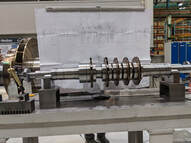
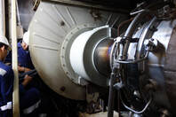
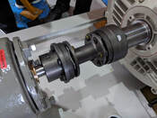
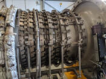
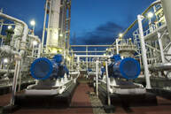
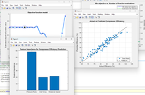
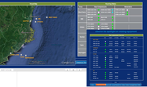
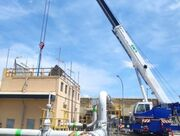

Nine core engineering and technology services for industrial reliability across Indonesia.
From equipment design and failure investigation to automation, analytics, and hands-on training — all tailored for Indonesian industry.

01We help clients select and design the right pumps, compressors, turbines, fans, and blowers for their operational environment. Our engineers evaluate process requirements, fluid properties, and operating conditions to recommend equipment that delivers optimal efficiency and long service life.

02Using vibration analysis, oil sampling, thermography, and real-time sensor data, we detect early signs of equipment degradation before they become costly failures. Our predictive maintenance programs reduce unplanned downtime and optimize schedules based on actual equipment health.

03When equipment fails, we go beyond symptoms to find the true root cause. We apply structured methodologies including Fishbone diagrams, 5-Why analysis, and fault tree analysis to deliver clear findings and a corrective action plan that prevents recurrence.
We design and deliver technical training programs for maintenance and engineering teams, building lasting internal capability in RCA methodology, predictive maintenance techniques, PLC fundamentals, and reliability engineering principles.

05We develop structured, risk-based maintenance strategies aligned with your asset criticality and operational goals — defining preventive and predictive tasks, spare parts planning, and scheduling to move from reactive to proactive practice.

06Our automation engineers design, program, and commission PLC-based control systems for industrial machinery. We work with Siemens, Allen-Bradley, and Mitsubishi platforms, covering logic development, HMI integration, SCADA connectivity, and on-site commissioning.

07We apply machine learning and data-driven analytics to industrial datasets — vibration signatures, process historian data, and sensor time series — to identify patterns, predict failures, and optimize performance across your facility.

08A systematic methodology for determining the most effective maintenance approach for each asset based on its function, failure modes, and consequences. We facilitate RCM analyses that reduce costs while preserving equipment availability and safety.

09Engineering project management and independent technical advisory for capital projects, turnarounds, and reliability improvement initiatives — covering scope definition, vendor evaluation, technical review, and execution oversight.
Tell us about your equipment reliability challenge and we will outline how we can help.
Send Us an Email →